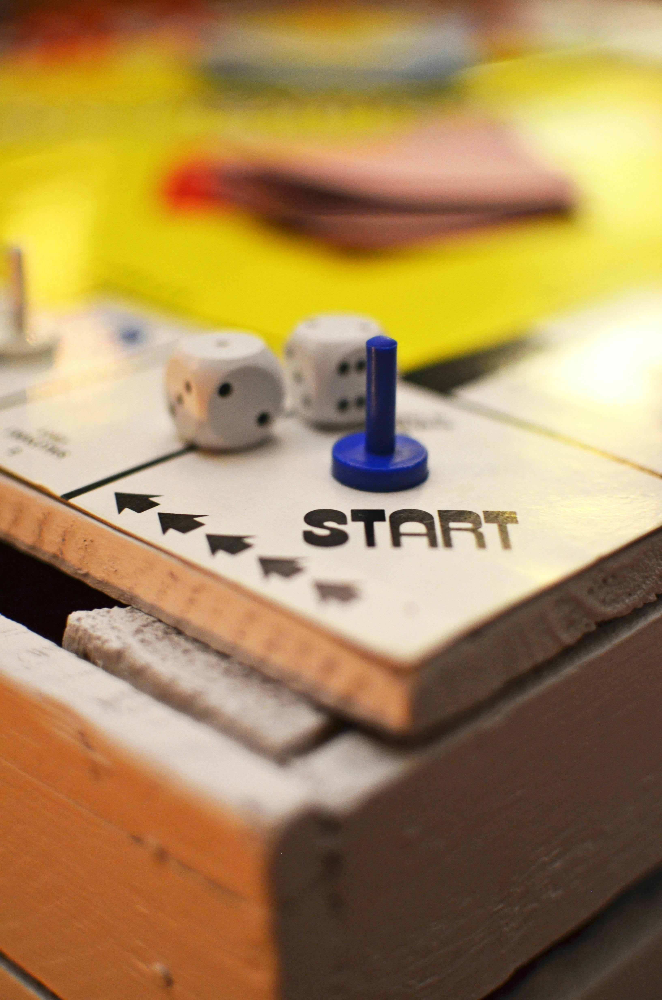

In this post, I argue why as a beginner, you should start with reproducibility in mind while using R.
I know your goal as a researcher is just to get the project done—completion first, quality later. This is where we all began. Just like learning the alphabet, we started slowly. But once we learned the alphabet, we wanted to build words. There is a natural traction to do that.
When you start in R, with just the “ABCs,” you will gain strength and confidence to move forward. You will also notice that there are flaws in your workflows, stumbling blocks, and accumulating files that deteriorate your further learning. The more you learn, the more you create, and the more .r files and outputs you generate. You can do R now, but it is not enjoyable—the initial honeymoon phase has ended.
Welcome! This is natural and the time to shift gears to reproducibility in R.
While as beginners, we just wanted to get the code out to produce the plot we wanted, a reproducible researcher, however, thinks differently. From the beginning, they plan, conduct, and wrap up their analysis with reproducibility in mind. Why? Because it helps them grow, allows for improvement, and creates workflows they can scale and build upon.
Here, I will list the common problems encountered in R as a beginner without reproducibility and later introduce a minimal viable reproducible workflow to start. You can expand it as necessary.
Common Beginner Problems without Reproducibility
Accumulating many files in various formats
Without a structured system, you end up with a mess of .R, .Rmd, .docx, .qmd, .png files scattered everywhere, often with vague names like rplot1.png, script1.R, script2.R. You’ll never want to revisit these chaotic files.
Messing up raw data
If you accidentally modify the raw data without proper backups, you may find yourself needing to re-import it or redo everything from scratch.
Code fails on different systems
You write code that works on your machine, but it doesn’t run properly on another system or when integrated into an .Rmd or Quarto file.
Difficulties tracking down code segments
With long scripts, you often lose track of where specific functions, like renaming variables, are located. Searching doesn’t help when the code is poorly organized.
Multiple data intermediates
You may end up with various versions of data and analysis files saved without knowing which one is most current or relevant.
How Basic Reproducibility Principles Address These Problems
Working in Projects
- Organizing your work into projects keeps things simpler. If you need to refer to scripts from other projects, you can still open them in RStudio without mixing files.
- This approach prevents you from accumulating unrelated files in one chaotic directory, which makes revisiting projects feel overwhelming. Starting clean with well-organized project folders helps.
Consistent Folder Structures (Separate Raw and Derived Data)
- Navigating your files becomes easier, and you’ll always know where to find the raw and processed data.
- Keeping raw data separate helps avoid accidental modifications. You can update your data cleaning scripts while keeping the original data intact—an essential principle.
Using here::here() for File Paths
This approach ensures that your project can run on different devices and systems without breaking due to absolute file paths. When you use R Markdown or Quarto, your code will function across platforms without needing major adjustments.
Writing Separate Scripts for Different Tasks
Breaking your code into modular scripts makes it easier to debug. You’ll always know which script to edit when something needs fixing.
Avoid Saving Output Files
While it may seem counterintuitive, the goal is to avoid saving outputs like graphs and tables. Instead, focus on saving the code that generates them. Think of the code as the recipe—the “cooking” only takes a few minutes, and you can always reproduce your results quickly when needed.
By following these reproducibility principles, you can avoid common pitfalls, improve your workflow, and build projects that are easier to manage and scale.
